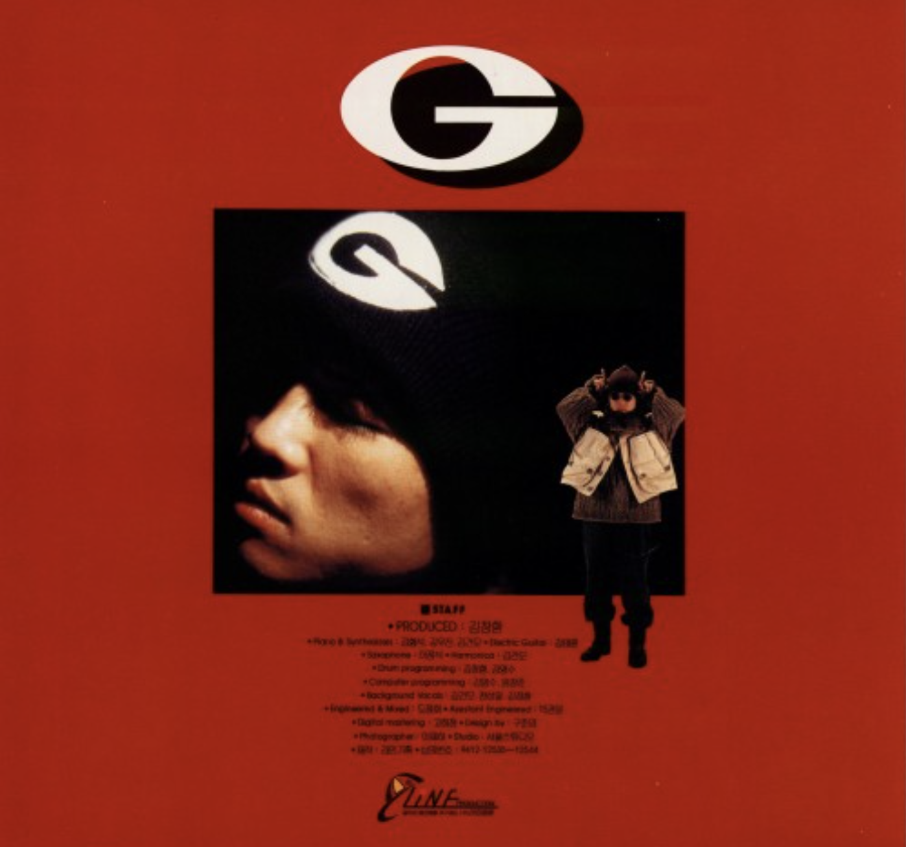
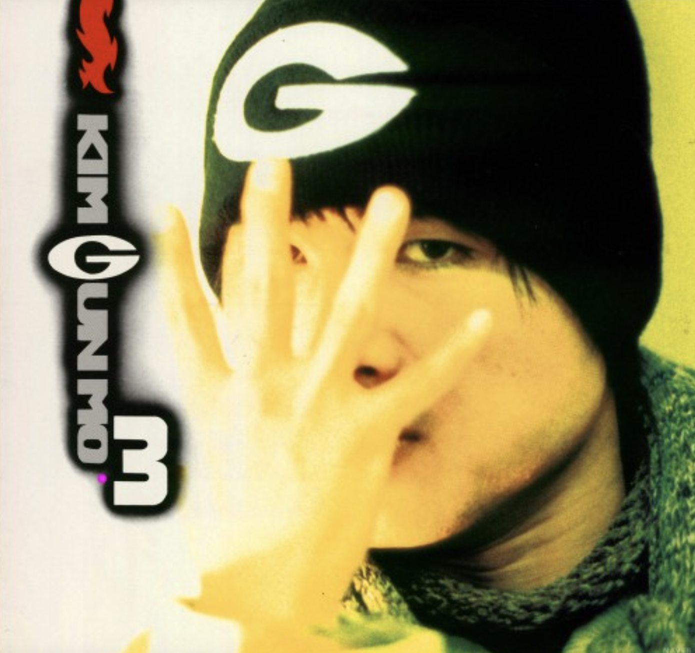
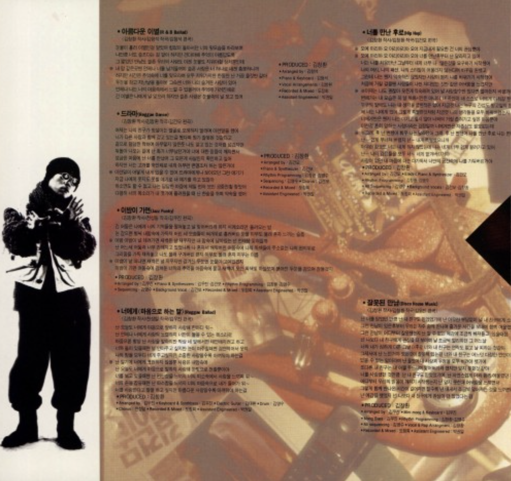
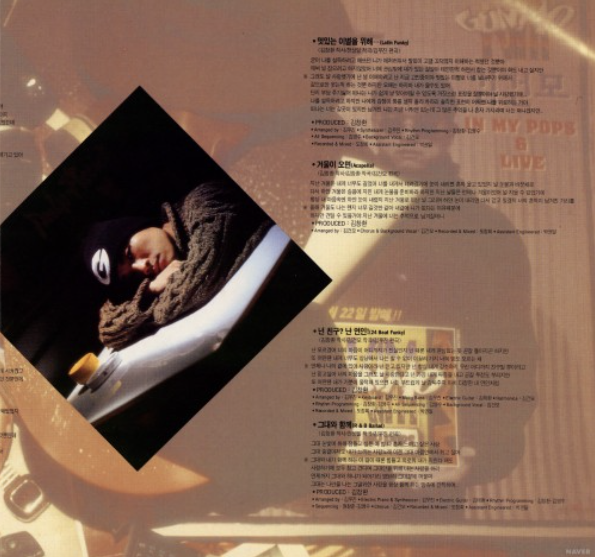
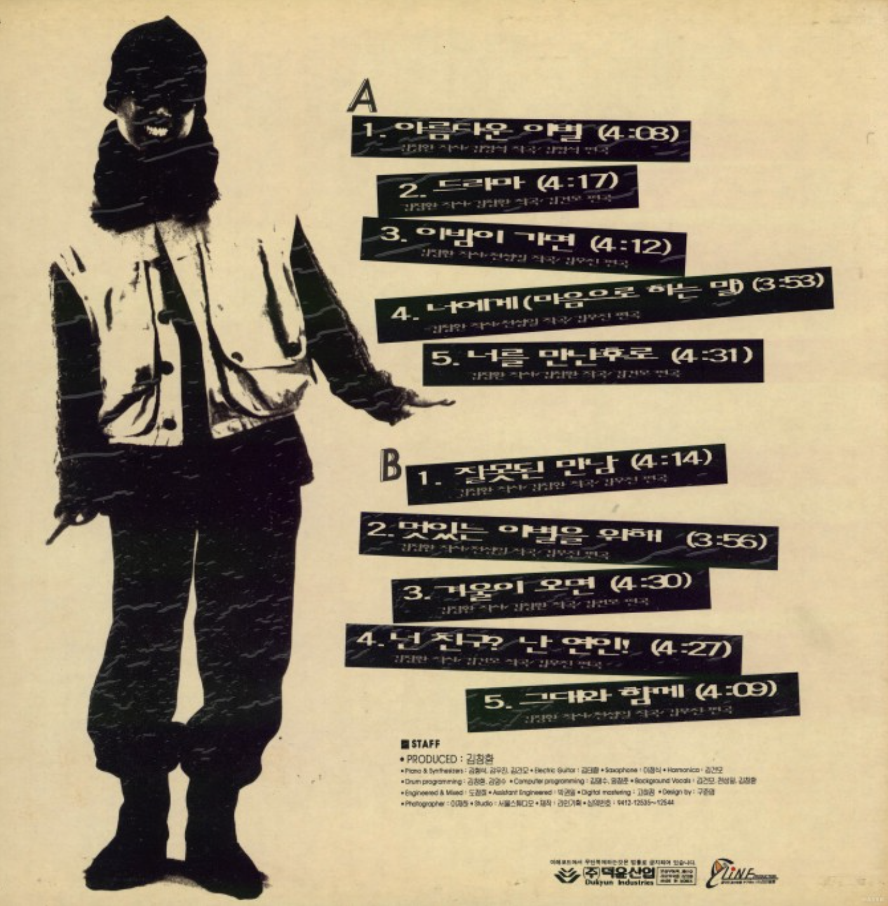

잘못된 만남
<1995>
가수 소개
김건모는 대한민국 최단 기간 최다 음반 판매 기록과 골든디스크 3년 연속 대상 수상 기록을 보유한 가수다. 특히 1994년에는 국내 주요 5대 가요 시상식 대상을 모두 석권했으며, 현재까지 이 기록의 유일한 보유자로 남아 있다. 음악 활동은 김창환 사단 시절의 전기, 솔로 아티스트로 성장한 중기, 최준영과 함께 대중성을 강화한 후기 시기로 나뉜다.
앨범소개
김건모 3집은 ‘잘못된 만남’의 폭발적인 인기로 한국 가요계를 휩쓴 앨범으로, 발매 3개월 만에 250만 장 이상 판매되며 한국 최다 판매 앨범 기록을 세웠다. 레게, 댄스, 발라드 등 다양한 장르를 담았으며, ‘아름다운 이별’ 같은 명곡들도 높은 완성도를 인정받는다. 프로듀서 김창환과 함께한 마지막 앨범으로, 김건모를 국민가수 반열에 올린 대표작이다.
🎵




